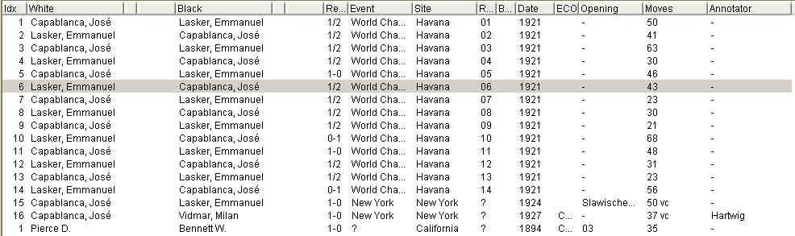
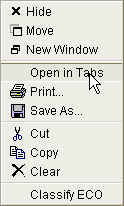

|
|
jose 1.4.1 |
|
Shows a list of games from the database.
Use The Database Overview Panel to select folders.
Use The Database Search Panel to search for games.

Use the scroll bar on the right to browse through the list. With very large databases, you will notice a slight delay during scrolling. This is no cause for alarm.
Double click a game to open it in The Game Panel .
You can select and drag games to other folders.
Select one or more games and right click to see more options.
Columns can be resized and rearranged
Move the mouse over the gap between two columns:

note how the mouse pointer changes to a double pointed arrow. Click and drag to enlarge or shrink a column.
Click a column header and drag it to another position:

Click a column header once to sort the games by this column:

for example, clicking the "White" column will sort the games by the white player's name,
in ascending alphabetical order (from A to Z).
Click a column header twice to sort in descending order (from Z to A):

Clicking a third time will remove the sort order.
Please note that, in some cases, sorting can become quite an expensive database operation.
If you have a very large database, and you enter search conditions
in The Database Search Panel , you should not apply a sort order to the result.
If you're looking for specific games (say, all games from "Kasparov") it is usually much easier to search for those games, instead of sorting and browsing through the list.
On the other hand, if there are no search restrictions, sorting is very fast, even on large databases.

Open this game in The Game Panel .
Open all games in The Game Panel . The games will be opened in several tabs.
Edit the game details. See The Game Details Dialog .
"Cut" the game. Move it to the Clipboard.
Copy the game to the clipoard.
Move the game to the Trash. The game is not immediately deleted.
Save one or several games to disk. This will open the The Export & Print Dialog , where you can select the target file and various output formats.
Print a game, or several games. This will open the The Export & Print Dialog , where you can select various output formats.
Update the ECO opening classification. See Classify ECO .
|
|
© 2002-2006 jose-chess.sourceforge.net |
|